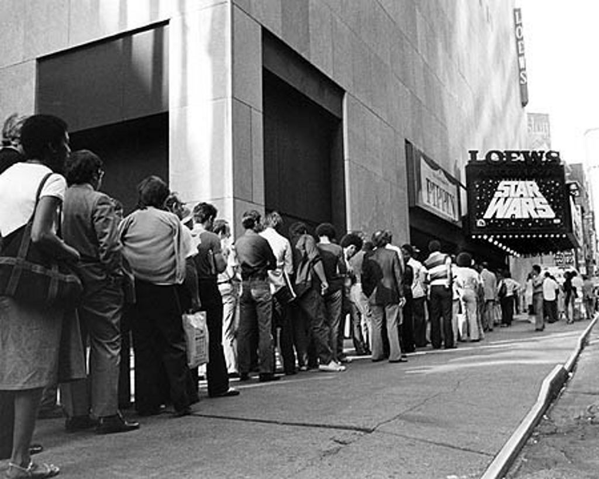
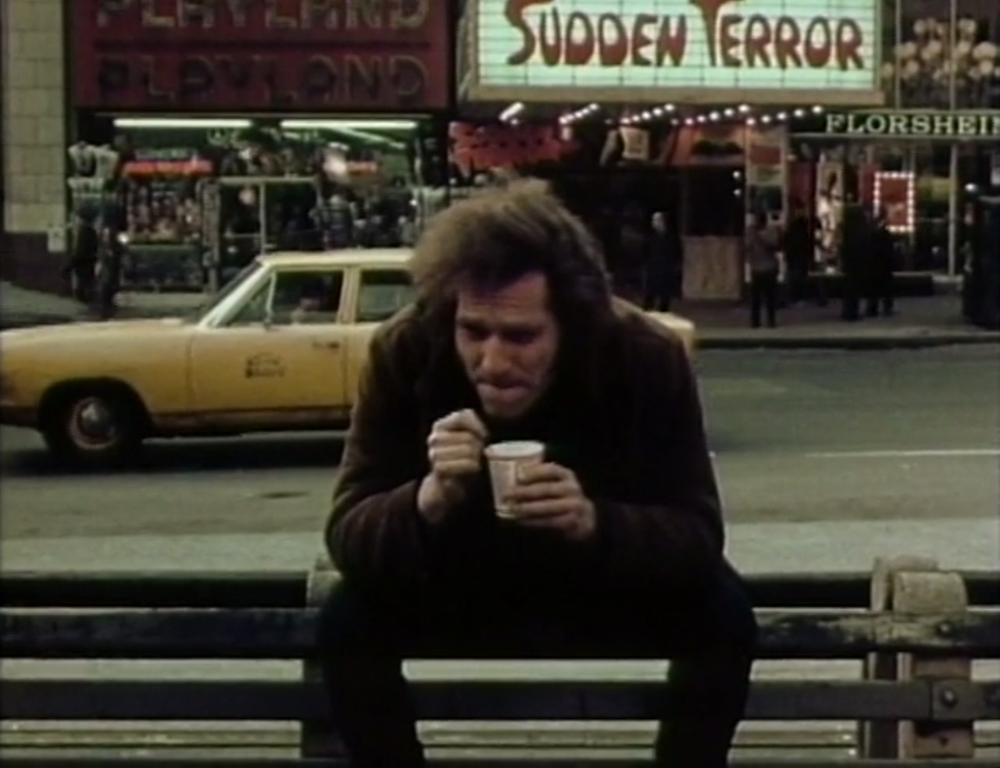

Protesting fur, 1980

Ed Koch making the rounds at the James Taylor concert in Central Park, 1977
Protesting fur, 1980
Lots of cool video clips from good old Channel 11!
Ed Koch making the rounds at the James Taylor concert in Central Park, 1977
89th and Broadway, 1980, looking North and West. Benny’s greasy spoon is on the left, next to the New Yorker Bookshop. Party Cake is on the right.


Harlem, 1972

Waiting on line for Star Wars, 1977
:(
Chris 217

East 29th Street, 1980

‘70s New York City - Max’s Kansas City

West side Broadway between W46th and W47th, ca. 1970
Southeast corner of 7th and W41st, ca. 1988
Photo by Bruce Martin